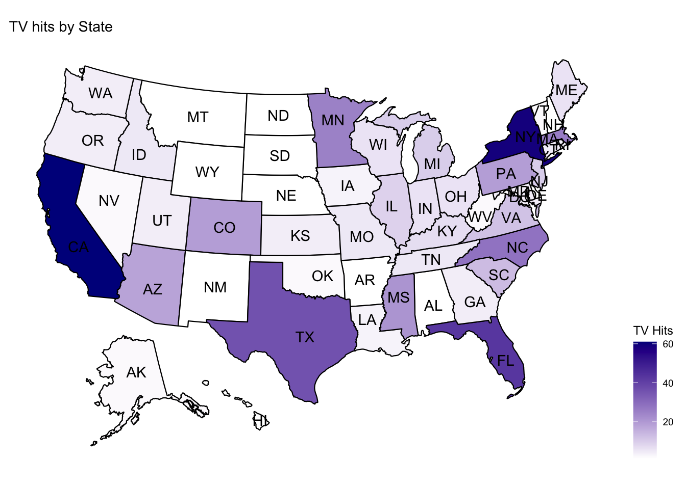
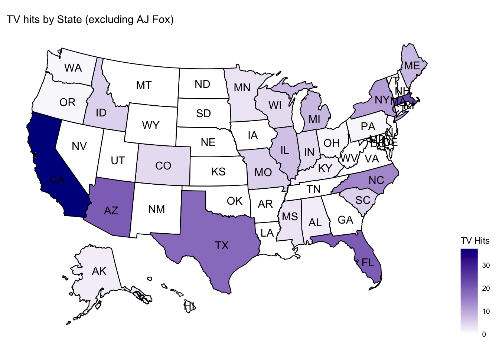
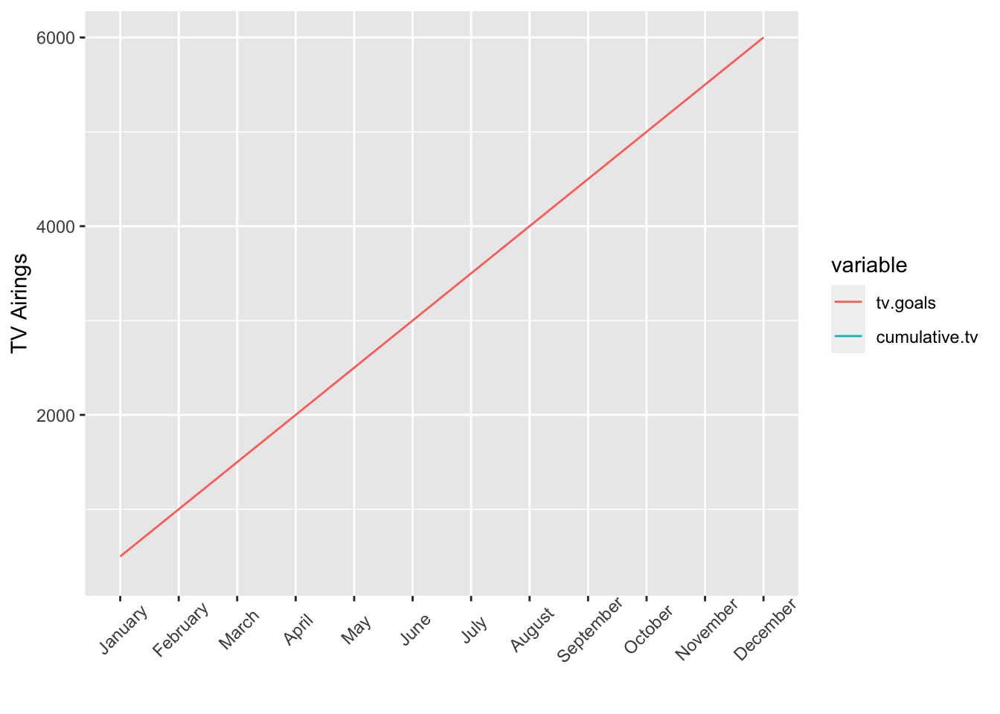

#load script with functions saved
source("monthlyreport_functions.R")
#read and format dataset
library('googlesheets4')
data <- read_sheet("https://docs.google.com/spreadsheets/d/1OdmkPrplKPKEQ7yKaRJg1ccODx05DehXftfPmWzQrWs/edit#gid=119899987", sheet=2)
#parsing data pulled from master sheet
tracking.data <-reformat_googlesheet(data)
# CHOOSE MONTH TO SUBSET
tracking.data.month <- tracking.data[which(tracking.data$month=="September" & tracking.data$year=="2020"),]source("monthlyreport_functions.R")
data <- read.csv('September2020trackingdata.csv')
tracking.data <-reformat_googlesheet(data)
tracking.data.month <- tracking.data[which(tracking.data$month=="September" & tracking.data$year=="2020"),]## `summarise()` ungrouping output (override with `.groups` argument)
## `summarise()` ungrouping output (override with `.groups` argument)| Program | Other | Online Articles | Radio | TV | ||
|---|---|---|---|---|---|---|
| CC | 96 | 2 | 0 | 23 | 5 | 0 |
| CM | 329 | 111 | 8 | 180 | 2 | 350 |
| CMN | 28 | 2 | 0 | 10 | 0 | 13 |
#condensed view
condensed.hits.draft <- expanded.hits.draft %>%
as_tibble() %>%
mutate(
social=rt+tw+fb+other,
stories=online.article+radio
)
condensed.hits <- condensed.hits.draft[,c("source", "social", "stories", "tv")]
names(condensed.hits) <- c("Program", "Social Media", "Stories", "TV")
#restrict data to CC, CM, CMN sources
condensed.hits.CMprograms <- subset(condensed.hits, Program=="CC"|Program=="CM"|Program=="CMN"|Program=="Total")
#design into publishable table
library(formattable)
condensed.hits.formatted <- formattable(condensed.hits.CMprograms,align=c("l", "c", "c", "c"))
condensed.hits.formatted| Program | Social Media | Stories | TV |
|---|---|---|---|
| CC | 98 | 28 | 0 |
| CM | 448 | 182 | 350 |
| CMN | 30 | 10 | 13 |
### Most Popular Assets this Month
#What were the most popular releases this month?
top10.releases <- releases.popularity(tracking.data.month)
#What were the most popular graphics this month?
top10.graphics <- graphics.popularity(tracking.data.month)
top10.releases
top10.graphics#compute hits by regions
month.hitsbyregion <- hitsbyregion(tracking.data.month)## `summarise()` ungrouping output (override with `.groups` argument)month.hitsbyregion| Region | Social Media | Stories | TV | Total |
|---|---|---|---|---|
| Southwest | 103 | 60 | 149 | 312 |
| Northeast | 131 | 58 | 49 | 238 |
| Southeast | 132 | 40 | 46 | 218 |
| Midwest | 54 | 32 | 28 | 114 |
| Great Plains | 44 | 9 | 18 | 71 |
| Northwest | 10 | 6 | 7 | 23 |
| Alaska | 0 | 1 | 2 | 3 |
| Hawaii | 0 | 1 | 0 | 1 |
library('usmap')
library('ggplot2')
tvheatmap.withAJFox <- tvheatmap.withAJFox(tracking.data.month)
tvheatmap.withoutAJFox <- tvheatmap.withoutAJFox(tracking.data.month)
tvheatmap.withAJFox## Warning: Use of `map_df$x` is discouraged. Use `x` instead.## Warning: Use of `map_df$y` is discouraged. Use `y` instead.## Warning: Use of `map_df$group` is discouraged. Use `group` instead.## Warning: Use of `centroid_labels$x` is discouraged. Use `x` instead.## Warning: Use of `centroid_labels$y` is discouraged. Use `y` instead.## Warning: Use of `centroid_labels$abbr` is discouraged. Use `abbr` instead.
tvheatmap.withoutAJFox## Warning: Use of `map_df$x` is discouraged. Use `x` instead.## Warning: Use of `map_df$y` is discouraged. Use `y` instead.## Warning: Use of `map_df$group` is discouraged. Use `group` instead.## Warning: Use of `centroid_labels$x` is discouraged. Use `x` instead.## Warning: Use of `centroid_labels$y` is discouraged. Use `y` instead.## Warning: Use of `centroid_labels$abbr` is discouraged. Use `abbr` instead.
## `summarise()` ungrouping output (override with `.groups` argument)## ── Attaching packages ───────────────────────────── tidyverse 1.3.0 ──## ✓ tibble 3.0.3 ✓ stringr 1.4.0
## ✓ readr 1.3.1 ✓ forcats 0.5.0
## ✓ purrr 0.3.4## ── Conflicts ──────────────────────────────── tidyverse_conflicts() ──
## x dplyr::filter() masks stats::filter()
## x dplyr::lag() masks stats::lag()## Using month as id variables## Warning: Removed 11 row(s) containing missing values (geom_path).